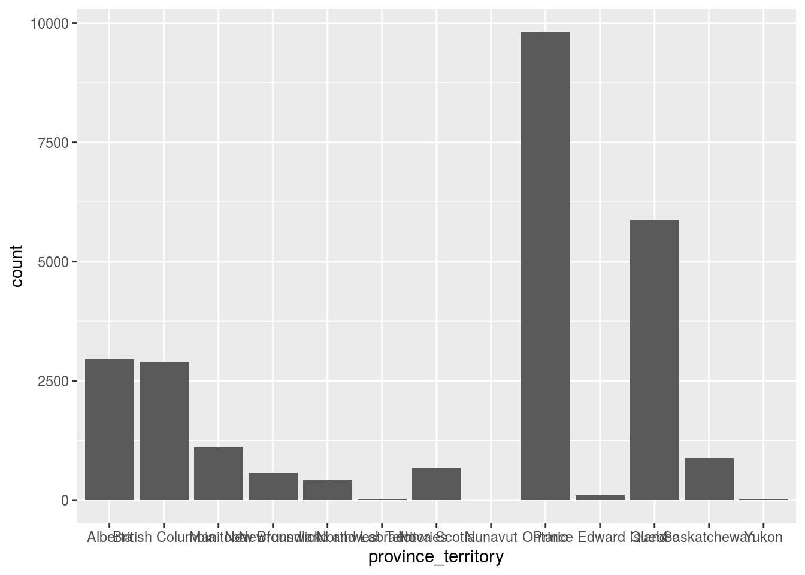
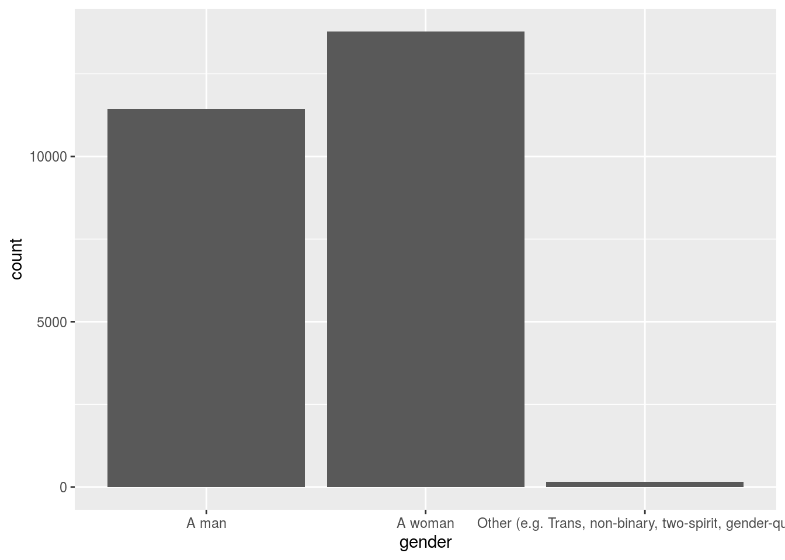
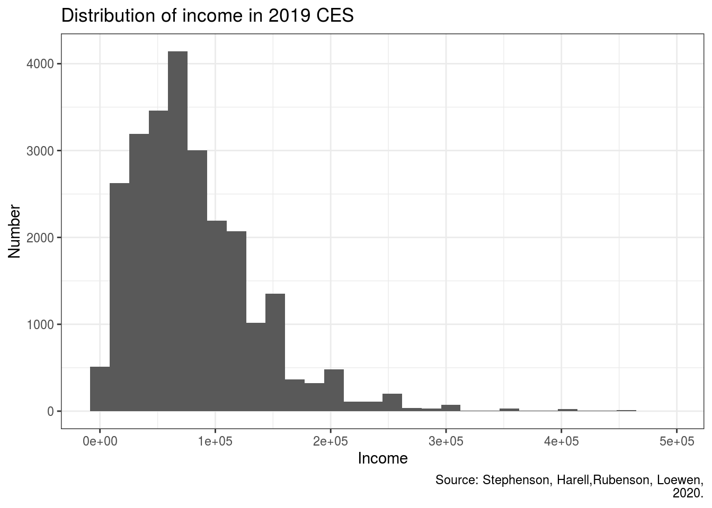

Title
“Low-to-middle-income groups and metropolitan have an influential impact in the 2019 Canadian Federal Election”
Date
2020-09-25
Abstract
“We installed some new packages to investigate the 2019 CES data.And we imported the relavant dataset and got a general overview of the Canadian Election through some handy packages. We mainly focused on the province, income and gender and made graphs to analyze them. As a result, we concluded that low-to-middle groups and metropolitan have an influential impact in the Canadian Federal Election.”
Introduction
We investigated the data of 2019 Canadian Federal Election through the package cesR. We found that different variables had various impact on the election.
We mainly concentrated on three variable: province, income and gender. We drawed bar charts and histogram to observe the relationship between variables and election. We found that low-to-middle-income group and people who lived in the big city have a big impact on the election. And the gender didn’t show huge difference, but it showed that women have more passion to vote.
The outline of the paper is: (1)Install new packages and invoke packages. (2)Import dataset. (3)Get a general overview of the dataset. (4)Select targeted variable. (5)Make graphs and analyze data. (6)Discussion about the graph. (7)Weakness and future plan.
cesR::get_decon()
## TO CITE THIS SURVEY FILE: Stephenson, Laura B; Harell, Allison; Rubenson, Daniel; Loewen, Peter John, 2020, '2019 Canadian Election Study - Online Survey',
## https://doi.org/10.7910/DVN/DUS88V, Harvard Dataverse, V1
## LINK: https://dataverse.harvard.edu/dataset.xhtml?persistentId=doi:10.7910/DVN/DUS88VData
The CES dataset is the 2019 Canadian Election Study data. And the CES this year included a dual-mode, two-wave data collection with a rolling cross-section during the 2019 federal election campaign and a post-election follow-up survey. 37822 people with 21 variable were counted into this dataset.
head(decon)
## # A tibble: 6 x 22
## ces_code citizenship yob gender province_territ… education lr lr_bef
## <chr> <fct> <fct> <fct> <fct> <fct> <chr> <chr>
## 1 ces2019… Canadian c… 1989 A wom… Quebec Master's… 2 <NA>
## 2 ces2019… Canadian c… 1998 A wom… Quebec Master's… 2 <NA>
## 3 ces2019… Canadian c… 2000 A wom… Ontario Some uni… 4 4
## 4 ces2019… Canadian c… 1998 A man Ontario Some uni… 7 7
## 5 ces2019… Canadian c… 2000 A wom… Ontario Complete… 4 4
## 6 ces2019… Canadian c… 1999 A wom… Ontario Some uni… 4 4
## # … with 14 more variables: lr_aft <chr>, religion <fct>,
## # sexuality_selected <fct>, sexuality_text <chr>, language_eng <fct>,
## # language_fr <fct>, language_abgl <fct>, employment <fct>, income <dbl>,
## # income_cat <fct>, marital <fct>, econ_retro <fct>, econ_fed <fct>,
## # econ_self <fct>skimr::skim(decon)| Name | decon |
| Number of rows | 37822 |
| Number of columns | 22 |
| _______________________ | |
| Column type frequency: | |
| character | 5 |
| factor | 16 |
| numeric | 1 |
| ________________________ | |
| Group variables | None |
Variable type: character
| skim_variable | n_missing | complete_rate | min | max | empty | n_unique | whitespace |
|---|---|---|---|---|---|---|---|
| ces_code | 0 | 1.00 | 11 | 11 | 0 | 1 | 0 |
| lr | 8486 | 0.78 | 1 | 2 | 0 | 11 | 0 |
| lr_bef | 23319 | 0.38 | 1 | 2 | 0 | 11 | 0 |
| lr_aft | 22989 | 0.39 | 1 | 2 | 0 | 11 | 0 |
| sexuality_text | 37822 | 0.00 | NA | NA | 0 | 0 | 0 |
Variable type: factor
| skim_variable | n_missing | complete_rate | ordered | n_unique | top_counts |
|---|---|---|---|---|---|
| citizenship | 0 | 1.00 | FALSE | 2 | Can: 36480, Per: 1342, Oth: 0 |
| yob | 0 | 1.00 | FALSE | 82 | 198: 814, 199: 812, 195: 799, 195: 795 |
| gender | 0 | 1.00 | FALSE | 3 | A w: 21980, A m: 15551, Oth: 291 |
| province_territory | 0 | 1.00 | FALSE | 13 | Ont: 14808, Que: 8399, Alb: 4481, Bri: 4354 |
| education | 0 | 1.00 | FALSE | 12 | Bac: 9192, Com: 7702, Com: 5865, Som: 4394 |
| religion | 0 | 1.00 | FALSE | 23 | Cat: 10771, Non: 9834, Agn: 2326, Don: 2277 |
| sexuality_selected | 0 | 1.00 | FALSE | 6 | Het: 32632, Bis: 1635, Hom: 1566, Pre: 1276 |
| language_eng | 8609 | 0.77 | FALSE | 1 | Eng: 29213 |
| language_fr | 25815 | 0.32 | FALSE | 1 | Fre: 12007 |
| language_abgl | 37659 | 0.00 | FALSE | 1 | Abo: 163 |
| employment | 0 | 1.00 | FALSE | 13 | Wor: 16124, Ret: 9008, Wor: 3415, Sel: 2517 |
| income_cat | 25559 | 0.32 | FALSE | 9 | Don: 2894, $30: 2559, $60: 1955, $1 : 1931 |
| marital | 0 | 1.00 | FALSE | 7 | Mar: 17230, Nev: 8458, Liv: 6070, Div: 2722 |
| econ_retro | 0 | 1.00 | FALSE | 4 | Sta: 16774, Got: 14065, Got: 5024, Don: 1959 |
| econ_fed | 0 | 1.00 | FALSE | 4 | Not: 14330, Wor: 13906, Bet: 6441, Don: 3145 |
| econ_self | 0 | 1.00 | FALSE | 4 | Not: 18926, Wor: 13669, Bet: 3815, Don: 1412 |
Variable type: numeric
| skim_variable | n_missing | complete_rate | mean | sd | p0 | p25 | p50 | p75 | p100 | hist |
|---|---|---|---|---|---|---|---|---|---|---|
| income | 12266 | 0.68 | 2.640342e+56 | 4.220915e+58 | 0 | 43000 | 72000 | 110000 | 6.747658e+60 | ▇▁▁▁▁ |
class(decon$ces_code)
## [1] "character"The variables we focus on are province, income and gender.
decon<-
decon%>%
filter(income<500000)
decon<-
decon%>%
select(province_territory,income,gender)decon%>%
ggplot(aes(x=province_territory))+
geom_bar()
decon%>%
ggplot(aes(x=gender))+
geom_bar()
decon %>%
ggplot(aes(x=income))+
geom_histogram()+
labs(x="Income",
y="Number",
title="Distribution of income in 2019 CES",
caption="Source: Stephenson, Harell,Rubenson, Loewen,
2020.")+
theme_bw()
## `stat_bin()` using `bins = 30`. Pick better value with `binwidth`.
Discussion
The main findings on the graph 1 are that different provinces have different impact on the election. Provinces included big city,like Ontario and Quebec, have a profound impact on the election.
The second graph shows the difference between male and female is tiny, but women have more passion to vote and paricipate in the election.And i think people from other gender should be encouraged to participate in election more.
In the final graph we find that the distribution of income is heavily skewed on the interval from fifty thousand to one hundred thousand.From that graph we could conclude that the low-to-middle-income group participate actively in election.
Weaknesses and next steps
In summary, I think i have three big weaknesses.
First, it’s the first time for me to use R coding to complete a project. My lack of basic knowledge about R limited my ability to make more suitable graphs, so i can’t show what i want to share perfectly.
Second, I didn’t design a sensible framework to show the relationship between data. In this project, I just used the basic framework learned from lecture.
Third, my data is too much that i cannot run visdat().
In the future, I would like to learn more about R coding to combine two or three variables together to analyze the influence they brought to Canadian Federal Election.
#Reference - Stephenson, Laura B; Harell, Allison; Rubenson, Daniel;Loewen, Peter John, 2020 ,‘2019 Canadian Election Study-Online Survey’,http://doi.org/10.7910/DVN/DUS88V, Harvard Dataverse, V1 - Paul A. Hodgetts and Rohan Alexander (2020). ces R: Access the CES Datasets a Little Easier.. R package version 0.1.0. - Hadley Wickham, Jim Hester and Winston Chang (2020). devtools: Tools to Make Developing R Packages Easier. https://devtools.r-lib.org/,https://github.com/r-lib/devtools.